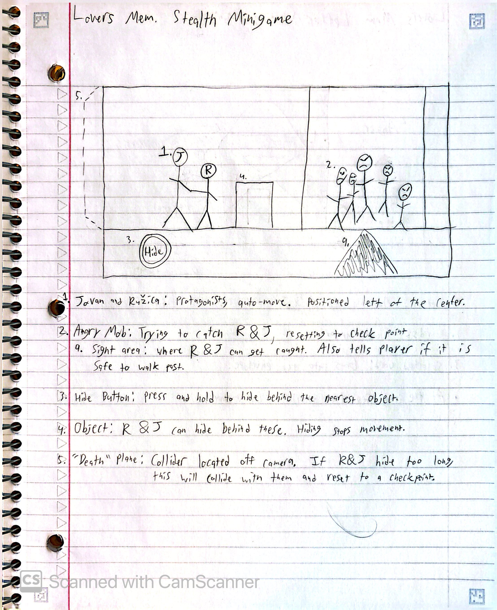
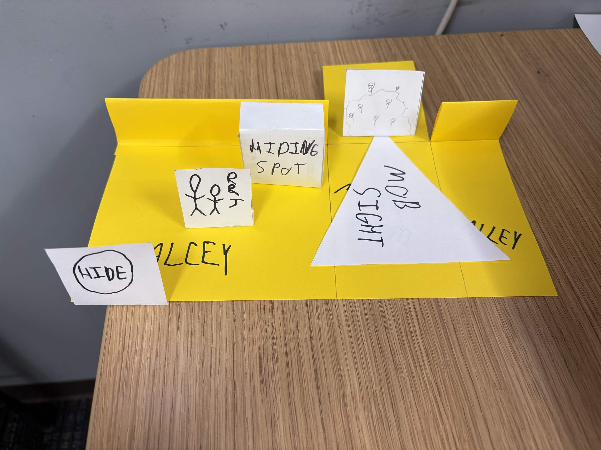

The Peaceland Spring 2026 demo start page.

My initial sketch for a sneaking minigame.

My paper prototype for a sneaking minigame.

Peaceland: Choose Your Memory is a peace building game where the player uses information
gathered from memories of a civil war to build toward a better future. The current version
is very similar to a visual novel, though more types of interaction are planned for the future.
The game is built in Unity Version 6, programmed in C#, and dialog is added through Yarn Spinner.
Peaceland is a Vertically Integrated Project at RIT, meaning it is a long-term project led by
faculty and worked on by different cohorts of both undergraduate and graduate students.
As an academic project, planning is done by semester. Work is completed in an agile workflow.
I worked on Pecaeland full-time during the Spring semester of 2026, where I was given the title of lead
designer/developer. During this time, the team created a new demo for the game.
As a designer, I worked on prototypes for minigames and drafts for future features.
The prototyping phase included building paper prototypes to bring to meetings for approval.
As a developer, I spent most of my time refactoring existing code to ensure modularity in the future.
Additionally, I added art assets to the Unity project, moved dialouge scripts into Yarn Spinner files,
began programming a prototype of a sneaking minigame, and created a structure for the new demo.
As a team lead, I was responsible for organizing and running weekly meetings, managing our Trello board,
facilitating communication with other teams, keeping the project in scope.
As a full-time worker, I also helped run playtests and exhibitions.
The Peaceland Spring 2026 demo start page.

My initial sketch for a sneaking minigame.

My paper prototype for a sneaking minigame.